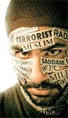

Global SolutionsFortunately, we live in a world, where religious prejudice can be decreased as much as possible. Organizations around the world are attempting to solve this social problem. For example, Tanenbaum, a non-profit organization, claims to promote mutual respect in schools, workplaces, and health care centres. They educate people to teach respect for religious diversity. At schools, kids were taught that being different is normal, and should not be feared. Health care experts train doctors to assist patients with religious needs. Patients were treated equally and were able to receive better care. Employees were more comfortable working in companies and workplaces became more profitable. Talent from all beliefs are encouraged and welcome. “Imagine a more peaceful world that respects differences. We are committed to making that vision a reality.” Offering donations will help the organization achieve their goals and bring peace to our world. You can donate at:
Actions in the Local CommunityMany solutions and groups of people are taking action, as our local community is starting to accept people for who they truly are. For example, Turner Fenton Secondary School is taking action as they are developing a club called Muslim Student Association. This club, run by students, educates other students on the religion of Islam and connections with other religions. This club also educates students the importance of equality and human rights. How can YOU stop religious discrimination?
What else can you do?
Sources: |

Why create the website?Islam makes up 22% of the world population, approximately 1.6 billion people. Islam is also the world’s fastest-spreading religion. Islam takes up a huge portion of the world population, yet so many are being discriminated every day. I believe that this world issue must be addressed in some way to reduce as much discrimination as possible. Personally, I am a Muslim and I feel that Islamic discrimination is unacceptable. I have had many family members and close friends share stories about feeling discriminated for something they are not. I believe that the stereotype, “Muslims are Terrorists” should not apply to 1.6 billion people in the world, especially when most of these people have not contributed to any terrorism-related acts. I believe that something must be done and solutions must be created, to raise as much awareness as possible. Recently, France has legislated rules to enforce the “Hijab Ban”. Multiple scenarios have occurred where women were forced to remove their religious headwear. I was shocked and upset to hear this news. I believed that human rights should have included the permission to wear specific appropriate clothing for religious purposes. Many people who accept the “Hijab Ban” believe that these women are being pressured to follow their religious duties. However, women who do wear the hijab were surveyed and have claimed otherwise. This ban was also enforced, since many believed that face covering created problems with direct communication. I feel a strong personal connection to this world-wide issue, especially in public places. Sometimes, I have heard of students call others, “Terrorists” simply because they were Muslim. In some areas when my family and I go traveling, there are not many Muslims. We felt discriminated when some people decided not to help us, and give us weird stares. I feel that it is important to express my opinion and clarify that all Muslims should not feel discriminated, when these negative comments only apply to a fraction of this population. Religious prejudice can affect any human being in the world. No one is immune to global discrimination. However, different parts of the world have different views on religious discrimination. It is human nature to feel weird about other specific groups of people. All humans have a little bit of selfishness and tend to admire others of their own race/religion/culture. Religious prejudice cannot disappear, unless all humans accept one another, regardless of skin colour, religion, status, gender, culture, weight, height, age, etc. In our 21st century, we can take the challenge to reduce as much inequity as possible, to make people feel accepted in this world and give everyone an equal chance to achieve their goals.
|